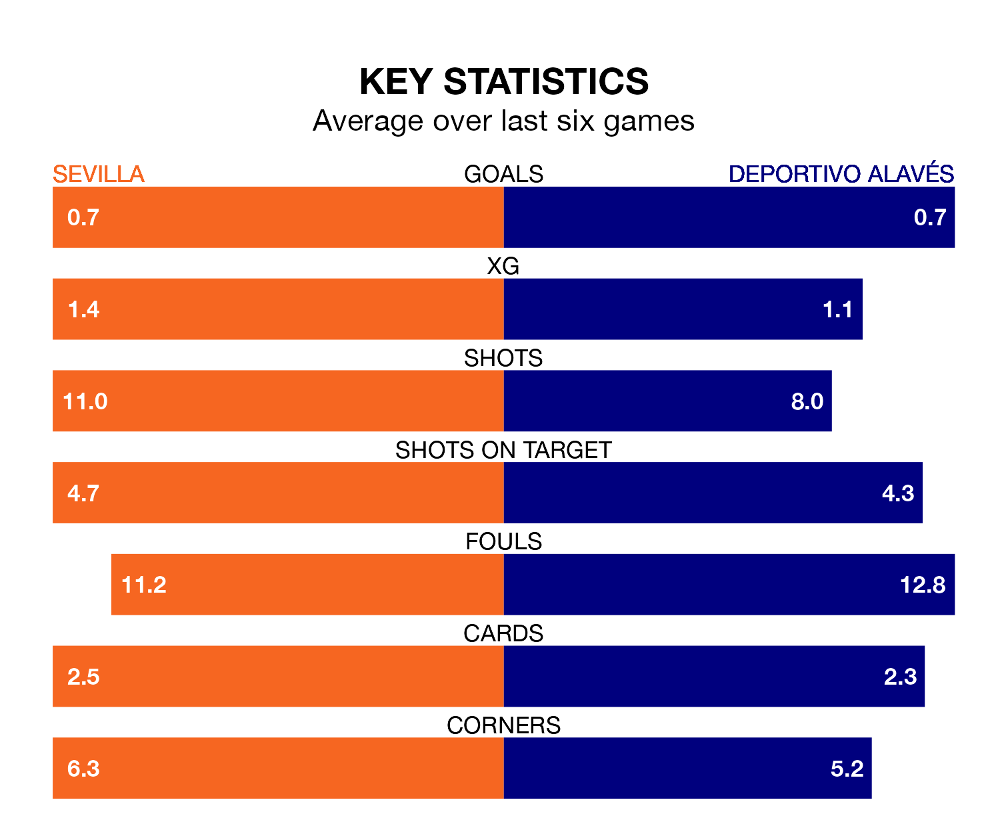

Deportivo Alavés travel to the Estadio Ramón Sánchez Pizjuán looking to secure a first win in six La Liga games against Sevilla on late Friday.
Alavés have lost three and drawn two matches since they last earned three points – against Granada CF on November 24.
They face a Sevilla side who have won just one and lost four over that time.
With 15 goals in 19 games so far this season, Alavés are the league's second-lowest scorers with 0.8 goals per game. And they are conceding at an average rate, letting in 25 goals at a rate of 1.3 per game.
Sevilla are also below average scorers, with 1.2 goals per game, compared to a league average of 1.3. They have conceded 1.4 goals per game.
The hosts are 16th in the table after 19 games, of which they have won three and drawn seven, earning 16 points.
Depor are one place ahead of Sevilla in 15th, with four wins and five draws putting them on 17 points.
In the last five years, Sevilla and Alavés have played each other on nine occasions. Sevilla won five of them, Alavés one, and they drew three times.
On average, Sevilla scored 1.4 goals and Alavés 0.9 in those matches.
Their last meeting was on August 21, when Alavés won 4-3 at home.
Sevilla's last match was on January 4, a 2-0 loss against Athletic Club Bilbao.
Alavés drew 1-1 with Real Sociedad last time out, on January 2, with Luis Rioja on the scoresheet.
Updated: 11:31, 09/01/24